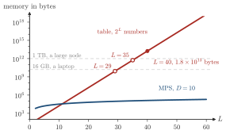
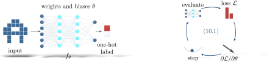

Page 2 of 9 of this session
10.3a Neural network quantum states
Can a neural network take the place of the \(2^L\) coefficients of a many-body wavefunction, and which loss do we train it with? We will now see that the network gives each coefficient when we ask for it, and that its loss is the variational energy (10.3), which is never below the ground-state energy \(E_0\).
\[\mathcal{L}(\theta) = \sum_n \left\| f_\theta(x_n) - y_n \right\|^2, \qquad \theta \;\longrightarrow\; \theta - \eta\, \nabla_\theta \mathcal{L}(\theta), \tag{10.1}\]
This is the loss and the update of a network in Section 10.2. The network gives the output \(f_\theta(x_n)\) for the input \(x_n\), \(y_n\) is the label that we want for it, \(\theta\) holds the weights and the biases, and \(\eta\) is the learning rate.
These networks are called neural network quantum states (NNQS). We meet them here for the first time in the course, and we treat them directly with the machine-learning methods of Section 10.2. The idea in one sentence is that a neural network can take the place of the exponentially many coefficients of a many-body wavefunction. In this way it has its own place in the hierarchy of variational many-body states that this course has been building since the matrix product states of Section 7.4. In this section we make this idea precise. We will see what the network computes, which loss function is used to train it, and how it is related to the ansätze that we already know.
We start from a difficulty that we have met before, most recently in the discussion of entanglement growth in Section 7.8b. A wavefunction for \(L\) spins,
\[|\psi\rangle = \sum_{s_1,\dots,s_L} C(s_1,\dots,s_L)\, |s_1,\dots,s_L\rangle, \tag{10.2}\]
is given by \(2^L\) coefficients, and it is not possible to store them explicitly once \(L\) is much bigger than 30 or 40. The idea of a neural network quantum state (NNQS) is to not store \(C(s_1,\dots,s_L)\), and instead to generate it. We build a neural network \(C_\theta\) that takes a spin configuration \((s_1,\dots,s_L)\) as input, which is formally an image of \(L\) pixels, and returns the coefficient. For a wavefunction that is complex, it returns its real and imaginary parts as two output numbers, or in an equivalent way its modulus and phase. This is the same idea as the matrix product state of Section 10.4 below, where a compact generator takes the place of exponentially many numbers. Here, however, the generator is built from the parameters of a neural network and not from a chain of matrices.

The question is then how to find the right \(\theta\) for the ground state, and here the methods of Section 10.2 appear again with almost no change. The variational principle, which we used for DMRG in Section 7.10, gives the following bound.
For every set of parameters \(\theta\) of the network,
\[E[\theta] \;=\; \frac{\langle \psi_\theta | H | \psi_\theta\rangle}{\langle \psi_\theta|\psi_\theta\rangle} \;=\; \frac{\sum_{s,s'} C_\theta^*(s)\, H_{s s'}\, C_\theta(s')}{\sum_s |C_\theta(s)|^2} \;\geq\; E_0, \tag{10.3}\]
with \(C_\theta(s)\) the coefficient that the network gives for the configuration \(s\) and \(H_{ss'}=\langle s|H|s'\rangle\). The variational energy is the loss of the network. It is never below the ground-state energy \(E_0\), and it is equal to \(E_0\) only when \(|\psi_\theta\rangle\) is a ground state.
In practice the training reaches the best state that the ansatz can give, and its energy is above \(E_0\) unless the ansatz contains a ground state. Equation (10.3) is the loss function of (10.1), meaning that the quantity that the network is trained to minimize is the energy of the system.
The steps From the expansion in eigenstates to the variational bound (10.3)
Let us take the simplest case first, a Hamiltonian with two levels \(E_0<E_1\) and the eigenstates \(|0\rangle\) and \(|1\rangle\). Any state is \(|\psi\rangle=c_0|0\rangle+c_1|1\rangle\), and its energy is
\[E=\frac{\langle\psi|H|\psi\rangle}{\langle\psi|\psi\rangle}=\frac{|c_0|^2E_0+|c_1|^2E_1}{|c_0|^2+|c_1|^2}=E_0+\frac{|c_1|^2}{|c_0|^2+|c_1|^2}\,(E_1-E_0).\]
The last term is never negative, so \(E\geq E_0\), and \(E=E_0\) only when \(c_1=0\).
With all the eigenstates \(|n\rangle\) of \(H\), with energies \(E_n\geq E_0\), the state of the network is \(|\psi_\theta\rangle=\sum_nc_n|n\rangle\), and in the same way
\[E[\theta]=\frac{\sum_n|c_n|^2E_n}{\sum_n|c_n|^2}=E_0+\frac{\sum_n|c_n|^2\,(E_n-E_0)}{\sum_n|c_n|^2}\geq E_0.\]
Every term of the last sum is zero or positive, so the bound holds for any \(\theta\), and the equality needs all the weight on the states with \(E_n=E_0\).
The network does not give the \(c_n\). It gives the coefficients \(C_\theta(s)=\langle s|\psi_\theta\rangle\) in the basis of the configurations of (10.2). So we insert the identity \(\sum_s|s\rangle\langle s|\) twice, on the left and on the right of \(H\),
\[\langle\psi_\theta|H|\psi_\theta\rangle=\sum_{s,s'}\langle\psi_\theta|s\rangle\langle s|H|s'\rangle\langle s'|\psi_\theta\rangle=\sum_{s,s'}C_\theta^*(s)\,H_{ss'}\,C_\theta(s'),\]
and once in the norm, which gives \(\langle\psi_\theta|\psi_\theta\rangle=\sum_s|C_\theta(s)|^2\). This is the second form of (10.3). It is the same number as the first form, since only the basis changed.

A state of \(L\) spins is written as
\[|\psi\rangle = \sum_{s_1,\dots,s_L} C(s_1,\dots,s_L)\, |s_1,\dots,s_L\rangle.\]
We store every \(C\) as a complex number in double precision, with \(16\) bytes. How much memory does the table need for \(L=40\)?
Show the answers
- A. ✗ False
This is false. A product state of \(40\) spins needs only \(80\) numbers, but a generic entangled state has \(2^{40}\) independent amplitudes. A table of \(40^2\) numbers does not describe it.
- B. ✗ False
This is false. \(10^6\) numbers is about \(2^{20}\), so this table is the size for \(20\) spins, about \(16\) MB. For \(40\) spins it is a factor \(10^6\) too small.
- C. ✓ True
This is true. There are \(2^{40}\approx1.1\times10^{12}\) coefficients of \(16\) bytes, which is \(1.8\times10^{13}\) bytes, roughly \(16\) TiB. A network with a few thousand parameters avoids this table.
The variational energy of a network state is
\[E[\theta] = \frac{\langle \psi_\theta | H | \psi_\theta\rangle}{\langle \psi_\theta|\psi_\theta\rangle} \geq E_0,\]
with \(E_0\) the ground-state energy of \(H\). For a spin chain we know \(E_0\) from an exact solution. A student finds \(E[\theta]\) clearly below \(E_0\), well beyond the statistical error. What should we conclude?
Show the answers
- A. ✗ False
This is false. Expand the state in eigenstates, so \(E=\sum_n|c_n|^2E_n\geq E_0\). For the two-site Heisenberg model \(E_0=-3J/4\), so a value \(-0.8J\) cannot be a state energy.
- B. ✓ True
This is true. Every normalized state has \(E\geq E_0\) by the variational principle. A value below \(E_0\) beyond the error points to a bug in \(H\), in the local energy or in the sampling.
- C. ✗ False
This is false. A larger network also obeys \(E\geq E_0\), since it is a bigger family of states and still states. An energy below \(E_0\) is not cured by more parameters.
Each plot shows a memory in bytes against the number of spins \(L\). The vertical axis is logarithmic. Which plot is the table of the \(2^L\) complex coefficients of a state?
Show the answers
- A. ✗ False
This is false. This curve is \(16\,L^4\) bytes, a power of \(L\), and its slope on this axis falls as \(L\) grows. At \(L=40\) it is \(4.1\times10^7\) bytes, while the table is \(1.8\times10^{13}\) bytes.
- B. ✓ True
This is true. The table is \(16\times2^L\) bytes, and each spin more adds \(\log_{10}2\approx0.30\) to its logarithm, so it is a straight line on this axis. It passes \(16\) GB at \(L=30\) and \(1\) TB at \(L=36\), and it reaches \(1.8\times10^{13}\) bytes at \(L=40\).
- C. ✗ False
This is false. This is a matrix product state with \(d=2\) and \(D=10\), which takes \(16\,L\,d\,D^2\) bytes, linear in \(L\). At \(L=40\) it is \(1.3\times10^5\) bytes, so it is almost flat here.
The two-site Heisenberg model is \(H=J\,\mathbf S_1\cdot\mathbf S_2\), with \(J>0\) and \(\mathbf S=\boldsymbol\sigma/2\). Take the trial state \(|\psi(\alpha)\rangle=\cos\alpha\,|\uparrow\downarrow\rangle+\sin\alpha\,|\downarrow\uparrow\rangle\), with one real parameter \(\alpha\). Compute its energy \(E(\alpha)\), and show that it is never below the ground-state energy \(E_0\).
Solution
We write \(\mathbf S_1\cdot\mathbf S_2=S^z_1S^z_2+\tfrac12\big(S^+_1S^-_2+S^-_1S^+_2\big)\). On an antiparallel pair the first term gives \(-1/4\), and the second one swaps the two spins with the factor \(1/2\), so
\[H|\uparrow\downarrow\rangle=J\Big(-\tfrac14|\uparrow\downarrow\rangle+\tfrac12|\downarrow\uparrow\rangle\Big),\qquad H|\downarrow\uparrow\rangle=J\Big(-\tfrac14|\downarrow\uparrow\rangle+\tfrac12|\uparrow\downarrow\rangle\Big).\]
The state is normalized, so
\[E(\alpha)=\langle\psi(\alpha)|H|\psi(\alpha)\rangle=J\Big(-\tfrac14+\cos\alpha\sin\alpha\Big)=J\Big(-\tfrac14+\tfrac12\sin2\alpha\Big).\]
The smallest value is \(-3J/4\) at \(\alpha=-\pi/4\), where the state is the singlet \((|\uparrow\downarrow\rangle-|\downarrow\uparrow\rangle)/\sqrt2\) of (7.3). The largest value is \(J/4\) at \(\alpha=\pi/4\), where the state is the triplet state \((|\uparrow\downarrow\rangle+|\downarrow\uparrow\rangle)/\sqrt2\). The eigenvalues of \(H\) are \(-3J/4\) for the singlet and \(J/4\) for the three triplet states, so \(E_0=-3J/4\), and \(E(\alpha)\geq E_0\) for every \(\alpha\).
The distance above the bound is \(E(\alpha)-E_0=J\,\big(1-|\langle\Psi|\psi(\alpha)\rangle|^2\big)\), with \(|\Psi\rangle\) the singlet, meaning that it is \(J\) times the weight of the state outside the singlet. In a calculation with a network on this model, an energy below \(-3J/4\) is a bug, and the distance above it tells how far the network is from the singlet.
Next we will see how to evaluate this energy without a sum over all the configurations.